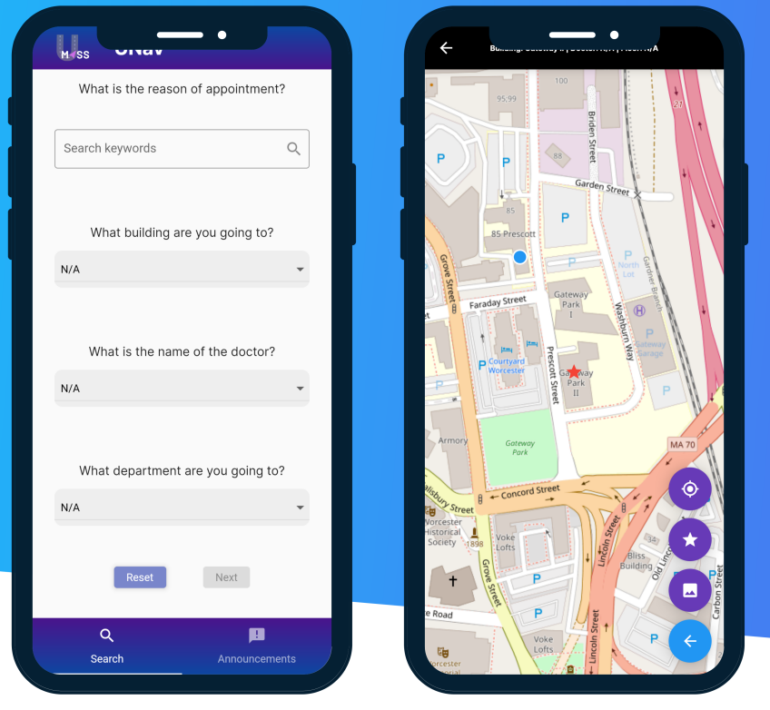

UMass Memorial Navigation App
Spring 2025, Mobile App Development

As part of a three-person team, I developed a Flutter-based mobile application to help patients navigate UMass Memorial Health’s vast network of over 20 buildings across multiple campuses.
My role focused on designing and implementing a document-based data schema using Firestore, allowing seamless storage and retrieval of different levels of building location data. This structure provided scalability and ease of integration with real hospital data as it became available.
To ensure smooth development and testing, I created a comprehensive mock dataset, enabling our team to test functionality while hospital administrators compiled accurate location data. This approach streamlined the development process, allowing for concurrent validation and iteration.
Poster
Download Poster